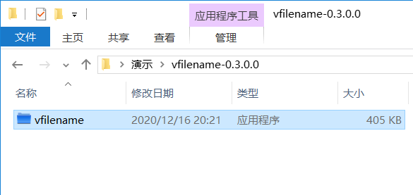
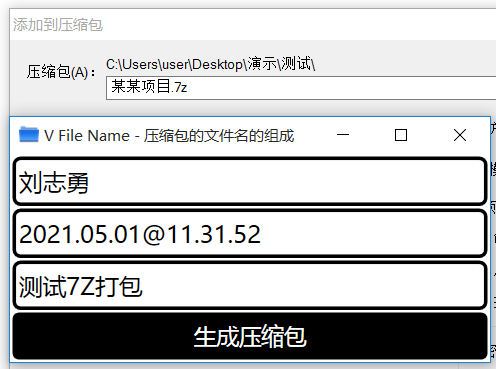
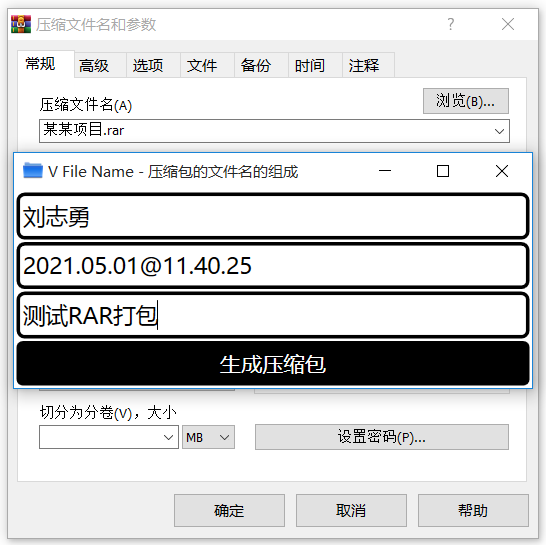

| 版本 | V0.3.0.0 |
| 下载 | https://www.vfilename.com/download/ |
| 支持 | Windows 10 / Windows 7 / WinRAR 6.00 |
| 首页 | https://www.vfilename.com/ |
| VirusTotal | 2/70 |
| 源代码 | https://github.com/vfilename/vfilename |
解压然后双击运行

最小化窗口，让它后台运行
右键点击要打包的文件，选择WinRAR的“添加到压缩文件”
填写用户名（例如“刘志勇”）和说明（例如“一次测试”），点击“生成压缩包”
生成的RAR压缩包，其文件名包含：项目、用户名、时间、说明文字

在系统托盘单击应用的图标，可以显示应用的窗口

应用的窗口
压缩包的表格
意见与建议，可以提交“Issues” https://github.com/vfilename/vfilename